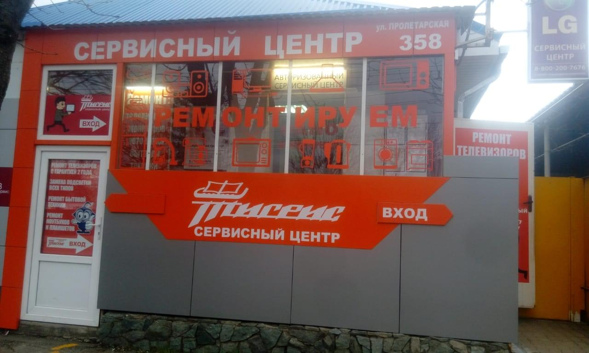
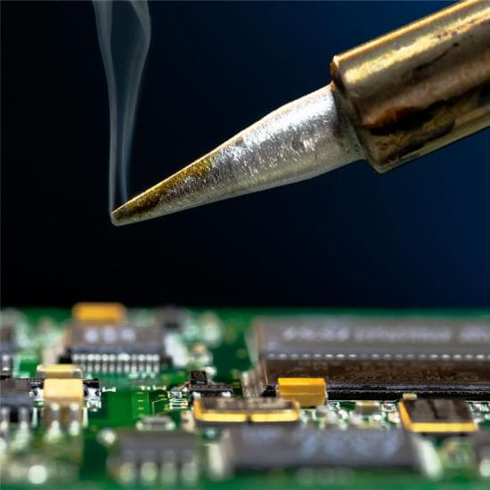
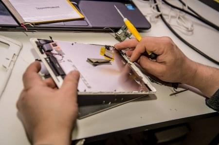

Наш сервисный центр предоставляет услуги по ремонту мелкой бытовой техники и бытовой электроники. Если у Вас сломался телевизор, микроволновка или даже фен, Вы можете обратиться к нашим мастерам за квалифицированной услугой. После ремонта Вам будет выдана гарантия и квитанция.
О нас
Сервис-центр Тигрис существует уже более 20 лет, в мастерской работают опытные мастера на соответствующем техническом оборудовании.



Что мы ремонтируем:
Замена подсветки, ремонт блока питания, ремонт материнской платы и т.д.
Замена высоковольтного предохранителя, рассеивателя трансформатора и т.д.
Замена шнура, нагревательного элемента регулятора температуры и т.д.
Также производится ремонт ресиверов, спутниковых приставок и других устройств на электронной базе.
Отзывы клиентов
Ходил в разные мастерские, только здесь мастер смог устранить сложную проблему, ждал долго, но все-таки проблема разрешилась! Не пришлось тратить 40 т.р. на новый smart-tv.
Олег. 35 лет.
Ребята молодцы, быстро сделали работу, принесла телевизор, через 2 дня уже готово.
Татьяна. 31 год.
Хорошо, Сергей очень доходчиво объяснил причины поломки дорогого фена. Починил быстро, всё работает до сих пор, без нареканий. Советую этот сервис.
Света. 24 года.
Ремонт телевизоров
а также другой сложной бытовой техники. Наиболее частые проблемы, как мы их решаем и сколько это будет стоить.
Ремонт - это дело для опытного человека. Если пытаться ремонтировать самостоятельно, то, не зная электроники, не имея должного оборудования, можно повредить технику или принести себе вред!
Наиболее частые проблемы в электронной быттехнике: повреждения блоков питания, выход из строя светодиодов, повреждения матрицы, материнской платы и платы T-con.
Стоимость ремонта этих поломок будет варьироваться от размера, стоимости техники, а также от сложности проблемы и количества затрачиваемого материала.
Заполните форму, задайте вопрос и прикрепите фото, чтобы получить краткое описание проблемы и возможной причины. Мы ответим в течение 1-3 часов!